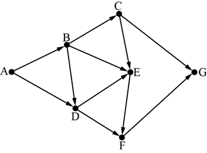

Вариант 4
Задание 1. В одной из кодировок Unicode каждый символ кодируется
16 битами.
Вова написал текст (в нём нет лишних пробелов):
«Бор, азот, гелий, натрий, водород, кислород, рентгений, менделевий, резерфордий – химические элементы».
Ученик вычеркнул из списка название одного химического элемента. Заодно он вычеркнул ставшие лишними запятую и пробел – два пробела не должны идти подряд.
При этом размер нового предложения в данной кодировке оказался на 10 байт меньше, чем размер исходного предложения. Напишите в ответе вычеркнутое название элемента.
Задание 2. Сообщение было зашифровано кодом. Использовались только буквы, приведённые в таблице.
| А | Б | В | Г | Д | Е |
| ..o.. | .o..o | .oo.o | .oooo | ...o. | .o.oo |
Определите, какие буквы в сообщении повторяются более одного раза, и запишите их в ответе.
...o..o.oo...o..oooo.o.oo
Задание 3. Напишите наименьшее натуральное трёхзначное число, для которого истинно высказывание:
НЕ (Число нечётное) И (Число кратно 11).
Задание 4. Между населёнными пунктами A, B, C, D, E построены дороги, протяжённость которых приведена в таблице.
| A | B | C | D | E | |
| A | 5 | 8 | 8 | 12 | |
| B | 5 | 4 | |||
| C | 8 | 7 | |||
| D | 8 | 4 | 5 | ||
| E | 12 | 7 | 5 |
Определите длину кратчайшего пути между пунктами A и E. Передвигаться можно только по дорогам, указанным в таблице. Каждый пункт можно
посетить
только один раз.
Задание 5.
У исполнителя Вычислитель две команды, которым присвоены номера:
1. умножь на 4
2. вычти 1
Первая из них увеличивает число на экране в 4 раза, вторая уменьшает его на 1.
Составьте алгоритм получения из числа 2 числа 120, содержащий не более 5 команд.
В ответе запишите только номера команд.
Задание 6. Ниже приведена программа, записанная на пяти языках программирования.
| Бейсик | Python |
|
DIM k, s AS INTEGER INPUT s INPUT k IF NOT (s >= 5 AND t < 3) THEN PRINT "YES" ELSE PRINT "NO" END IF |
s = int(input()) k = int(input()) not ((s >= 5) and (t < 3)): print("YES") else: print("NO") |
| Паскаль | Алгоритмический язык |
|
var s, k: integer; begin readln(s); readln(k); if not ((s >= 5) and (t < 3)) then writeln ('YES') else writeln ('NO') end. |
алг нач цел s, k ввод s ввод k если не (s >= 5 и t < 3) то вывод "YES" иначе вывод "NO" все кон |
| С++ | |
| #include using namespace std; int main() { int s, k; cin >> s; cin >> k; if !((s >= 5) && (t < 3)) cout << "YES" ; else cout << "NO" ; return 0; } |
|
Было проведено 9 запусков программы, при которых в качестве значений
переменных s и k вводились следующие пары чисел:
(2, –2); (5, 3); (14, 1); (–12, 5); (5, –7); (10, 3); (8, 2); (3, 0); (23, 9).
Сколько было запусков, при которых программа напечатала «NO»?
Задание 7.
Доступ к файлу matem.html, находящемуся на сервере exam.ru, осуществляется по протоколу
http. Фрагменты адреса файла закодированы цифрами от 1 до 7. Запишите последовательность этих
цифр, кодирующую адрес
указанного файла в сети Интернет.
1) ://
2) exam
3) /
4) .html
5) http
6) .ru
7) matem
Задание 8. В языке запросов поискового сервера для
обозначения логической операции «ИЛИ» используется символ «|», а для логической операции «И» –
символ «&».
В таблице приведены запросы и количество найденных по ним страниц некоторого
сегмента сети Интернет.
| Запрос | Найдено страниц (в тысячах) |
| Гомер & Илиада | 125 |
| Гомер & (Одиссея | Илиада) | 395 |
| Гомер & Одиссея | 330 |
Какое количество страниц (в тысячах) будет найдено по запросу
Гомер & Одиссея & Илиада?
Считается, что все запросы выполнялись практически одновременно,
так что набор
страниц, содержащих все искомые слова, не изменялся за время выполнения запросов.
Задание 9.
На рисунке – схема дорог, связывающих города A, B, C, D, E, F, G. По каждой дороге можно
двигаться только в одном направлении, указанном стрелкой. Сколько существует различных путей из
города A в город G?

Задание 10.
Переведите число 126 из десятичной системы счисления в двоичную систему счисления.
1) В ответе укажите двоичное число. Основание системы счисления указывать не нужно.
2) Сколько единиц содержит полученное число? В ответе укажите одно число – количество
единиц.
3) Сколько нулей содержит полученное число? В ответе укажите одно число – количество
нулей.
4) Переведите число 1111110 из двоичной системы счисления в десятичную систему счисления.
В ответе напишите полученное число.
Задание 11.
В одном из произведений А.С. Пушкина, текст которого приведён в подкаталоге каталога Проза, есть персонаж Екимовна.
С помощью поисковых средств операционной системы и текстового редактора или браузера выясните название этого произведения и напишите первое слово из названия произведения.
Задание 12.
Сколько файлов объёмом не менее 400 000 байт каждый содержится в подкаталогах каталога DEMO-12?
В ответе
укажите только число.
Ответы на задания
1) бор
2) аб
3) 110
4) 12
5) 11221
6) 3
7) 5126374
8) 60
9) 7
10.1) 10001100
10.2) 3
10.3) 5
10.4) 126
11) Арап
12) 40